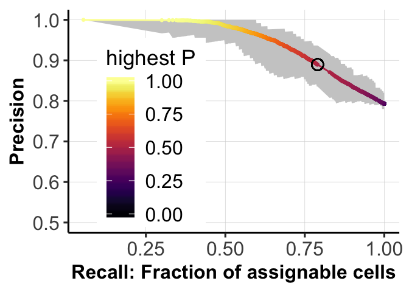
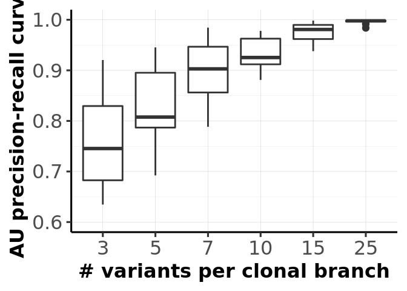
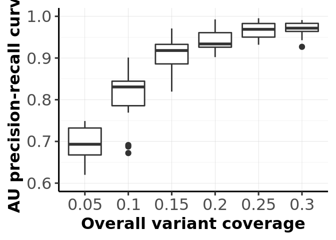
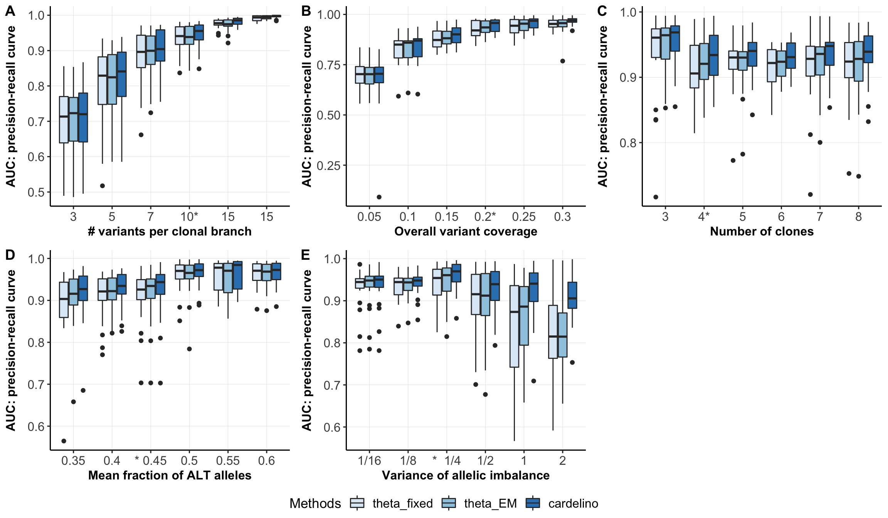
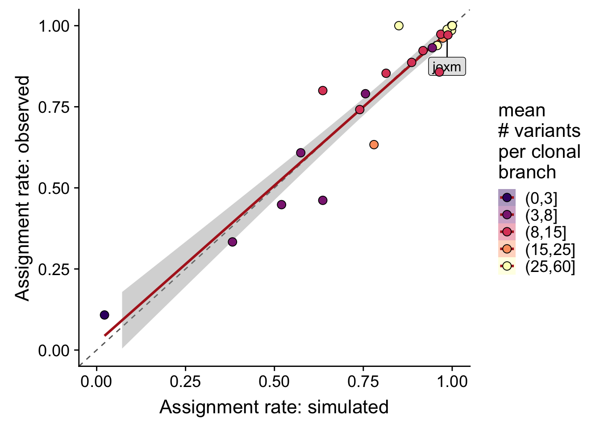
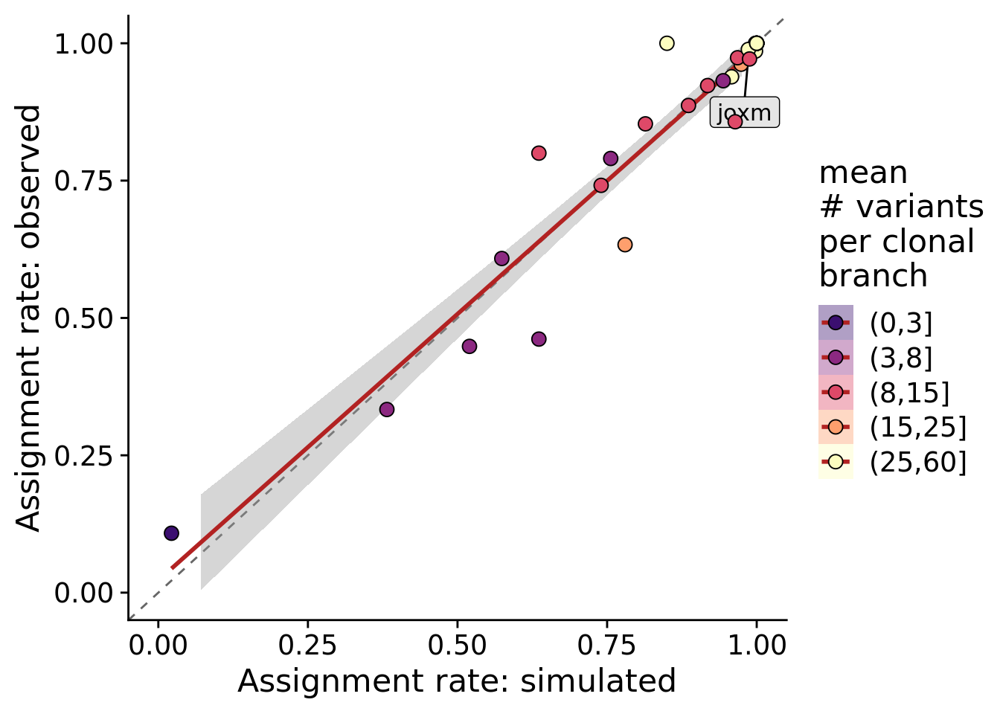

Last updated: 2018-08-31
workflowr checks: (Click a bullet for more information) ✔ R Markdown file: up-to-date
Great! Since the R Markdown file has been committed to the Git repository, you know the exact version of the code that produced these results.
✔ Environment: empty
Great job! The global environment was empty. Objects defined in the global environment can affect the analysis in your R Markdown file in unknown ways. For reproduciblity it’s best to always run the code in an empty environment.
✔ Seed:
set.seed(20180807)
The command set.seed(20180807) was run prior to running the code in the R Markdown file. Setting a seed ensures that any results that rely on randomness, e.g. subsampling or permutations, are reproducible.
✔ Session information: recorded
Great job! Recording the operating system, R version, and package versions is critical for reproducibility.
✔ Repository version: 1310c93
wflow_publish or wflow_git_commit). workflowr only checks the R Markdown file, but you know if there are other scripts or data files that it depends on. Below is the status of the Git repository when the results were generated:
Ignored files:
Ignored: .DS_Store
Ignored: .Rhistory
Ignored: .Rproj.user/
Ignored: .vscode/
Ignored: code/.DS_Store
Ignored: data/raw/
Ignored: src/.DS_Store
Ignored: src/Rmd/.Rhistory
Untracked files:
Untracked: Snakefile_clonality
Untracked: Snakefile_somatic_calling
Untracked: code/analysis_for_garx.Rmd
Untracked: code/selection/
Untracked: code/yuanhua/
Untracked: data/canopy/
Untracked: data/cell_assignment/
Untracked: data/de_analysis_FTv62/
Untracked: data/donor_info_070818.txt
Untracked: data/donor_info_core.csv
Untracked: data/donor_neutrality.tsv
Untracked: data/exome-point-mutations/
Untracked: data/fdr10.annot.txt.gz
Untracked: data/human_H_v5p2.rdata
Untracked: data/human_c2_v5p2.rdata
Untracked: data/human_c6_v5p2.rdata
Untracked: data/neg-bin-rsquared-petr.csv
Untracked: data/neutralitytestr-petr.tsv
Untracked: data/sce_merged_donors_cardelino_donorid_all_qc_filt.rds
Untracked: data/sce_merged_donors_cardelino_donorid_all_with_qc_labels.rds
Untracked: data/sce_merged_donors_cardelino_donorid_unstim_qc_filt.rds
Untracked: data/sces/
Untracked: data/selection/
Untracked: data/simulations/
Untracked: data/variance_components/
Untracked: figures/
Untracked: output/differential_expression/
Untracked: output/donor_specific/
Untracked: output/line_info.tsv
Untracked: output/nvars_by_category_by_donor.tsv
Untracked: output/nvars_by_category_by_line.tsv
Untracked: output/variance_components/
Untracked: references/
Untracked: tree.txt
| File | Version | Author | Date | Message |
|---|---|---|---|---|
| Rmd | 1310c93 | davismcc | 2018-08-30 | Tweaking plots |
| Rmd | 846dec4 | davismcc | 2018-08-30 | Some small tweaks/additions to analyses |
| html | ca3438f | davismcc | 2018-08-29 | Build site. |
| Rmd | dc78a95 | davismcc | 2018-08-29 | Minor updates to analyses. |
| html | e573f2f | davismcc | 2018-08-27 | Build site. |
| Rmd | 678546d | davismcc | 2018-08-27 | Suppressing warnings. |
| html | 9ec2a59 | davismcc | 2018-08-26 | Build site. |
| Rmd | cae617f | davismcc | 2018-08-26 | Updating simulation analyses |
| html | 36acf15 | davismcc | 2018-08-25 | Build site. |
| Rmd | d618fe5 | davismcc | 2018-08-25 | Updating analyses |
| html | 090c1b9 | davismcc | 2018-08-24 | Build site. |
| html | 02a8343 | davismcc | 2018-08-24 | Build site. |
| Rmd | 43f15d6 | davismcc | 2018-08-24 | Adding data pre-processing workflow and updating analyses. |
| html | 43f15d6 | davismcc | 2018-08-24 | Adding data pre-processing workflow and updating analyses. |
knitr::opts_chunk$set(echo = TRUE, warning = FALSE, message = FALSE)
dir.create("figures/simulations", showWarnings = FALSE, recursive = TRUE)
library(ggpubr)
library(tidyverse)
library(cardelino)
library(viridis)
library(cowplot)
library(latex2exp)
library(ggrepel)
lines <- c("euts", "fawm", "feec", "fikt", "garx", "gesg", "heja", "hipn",
"ieki", "joxm", "kuco", "laey", "lexy", "naju", "nusw", "oaaz",
"oilg", "pipw", "puie", "qayj", "qolg", "qonc", "rozh", "sehl",
"ualf", "vass", "vuna", "wahn", "wetu", "xugn", "zoxy", "vils")Define functions for simulation.
# assess cardelino with simulation
dat_dir <- "data/"
data(config_all)
data(simulation_input)
simu_input <- list("D" = D_input)
demuxlet <- function(A, D, Config, theta1 = 0.5, theta0 = 0.01) {
P0_mat <- dbinom(A, D, theta0, log = TRUE)
P1_mat <- dbinom(A, D, theta1, log = TRUE)
P0_mat[which(is.na(P0_mat))] <- 0
P1_mat[which(is.na(P1_mat))] <- 0
logLik_mat <- t(P0_mat) %*% (1 - Config) + t(P1_mat) %*% Config
prob_mat <- exp(logLik_mat) / rowSums(exp(logLik_mat))
prob_mat
}
simulate_joint <- function(Config_all, D_all, n_clone = 4, mut_size = 5,
missing = NULL, error_mean = c(0.01, 0.44),
error_var = c(30, 4.8), n_repeat = 1) {
simu_data_full <- list()
for (i in seq_len(n_repeat)) {
Config <- sample(Config_all[[n_clone - 2]], size = 1)[[1]]
Config <- matrix(rep(c(t(Config)), mut_size), ncol = ncol(Config),
byrow = TRUE)
row.names(Config) <- paste0("SNV", seq_len(nrow(Config)))
colnames(Config) <- paste0("Clone", seq_len(ncol(Config)))
D_input <- sample_seq_depth(D_all, n_cells = 200, missing_rate = missing,
n_sites = nrow(Config))
sim_dat <- sim_read_count(Config, D_input, Psi = NULL, cell_num = 200,
means = error_mean, vars = error_var)
sim_dat[["Config"]] <- Config
simu_data_full[[i]] <- sim_dat
}
simu_data_full
}
assign_score <- function(prob_mat, simu_mat, threshold=0.2, mode="delta") {
assign_0 <- cardelino::get_prob_label(simu_mat)
assign_1 <- cardelino::get_prob_label(prob_mat)
prob_val <- cardelino::get_prob_value(prob_mat, mode = mode)
idx <- prob_val >= threshold
rt_list <- list("ass" = mean(idx),
"acc" = mean(assign_0 == assign_1),
"acc_ass" = mean((assign_0 == assign_1)[idx]))
rt_list
}
assign_curve <- function(prob_mat, simu_mat, mode="delta"){
assign_0 <- cardelino::get_prob_label(simu_mat)
assign_1 <- cardelino::get_prob_label(prob_mat)
prob_val <- cardelino::get_prob_value(prob_mat, mode = mode)
thresholds <- sort(unique(prob_val))
ACC <- rep(0, length(thresholds))
ASS <- rep(0, length(thresholds))
for (i in seq_len(length(thresholds))) {
idx <- prob_val >= thresholds[i]
ASS[i] <- mean(idx)
ACC[i] <- mean((assign_0 == assign_1)[idx])
}
thresholds <- c(thresholds, 1.0)
ACC <- c(ACC, 1.0)
ASS <- c(ASS, 0.0)
AUC <- AUC_acc_ass <- 0.0
for (i in seq_len(length(thresholds) - 1)) {
AUC <- AUC + 0.5 * (thresholds[i] - thresholds[i + 1]) *
(ACC[i] + ACC[i + 1])
AUC_acc_ass <- AUC_acc_ass + 0.5 * (ASS[i] - ASS[i + 1]) *
(ACC[i] + ACC[i + 1])
}
AUC <- AUC / (thresholds[1] - thresholds[length(thresholds)])
AUC_acc_ass <- AUC_acc_ass / (ASS[1] - ASS[length(thresholds)])
rt_list <- list("ACC" = ACC, "ASS" = ASS, "AUC" = AUC,
"AUC_acc_ass" = AUC_acc_ass, "thresholds" = thresholds)
rt_list
}
assign_macro_ROC <- function(prob_mat, simu_mat) {
thresholds <- seq(0, 0.999, 0.001)
ACC <- rep(0, length(thresholds))
ASS <- rep(0, length(thresholds))
FPR <- rep(0, length(thresholds))
TPR <- rep(0, length(thresholds))
for (i in seq_len(length(thresholds))) {
idx <- prob_mat >= thresholds[i]
ASS[i] <- mean(idx) # not very meaningful
ACC[i] <- mean(simu_mat[idx])
FPR[i] <- sum(simu_mat[idx] == 0) / sum(simu_mat == 0)
TPR[i] <- sum(simu_mat[idx] == 1) / sum(simu_mat == 1)
}
AUC <- 0.0
for (i in seq_len(length(thresholds) - 1)) {
AUC <- AUC + 0.5 * (FPR[i] - FPR[i + 1]) * (TPR[i] + TPR[i + 1])
}
rt_list <- list("FPR" = FPR, "TPR" = TPR, "AUC" = AUC,
"thresholds" = thresholds, "ACC" = ACC, "ASS" = ASS)
rt_list
}Run simulations.
set.seed(1)
ACC_all <- c()
ASS_all <- c()
AUC_all <- c()
ERR_all <- c()
labels_all <- c()
method_all <- c()
variable_all <- c()
type_use <- c("mut_size", "n_clone", "missing", "FNR", "shapes1")
value_list <- list(c(3, 5, 7, 10, 15, 25),
seq(3, 8),
seq(0.7, 0.95, 0.05),
seq(0.35, 0.6, 0.05),
c(0.5, 1.0, 2.0, 4.0, 8.0, 16.0))
for (mm in seq_len(length(value_list))) {
values_all <- value_list[[mm]]
for (k in seq_len(length(values_all))) {
if (mm == 1) {
simu_data <- simulate_joint(Config_all, simu_input$D, n_clone = 4,
mut_size = values_all[k], missing = 0.8,
error_mean = c(0.01, 0.44), n_repeat = 20)
} else if (mm == 2) {
simu_data <- simulate_joint(Config_all, simu_input$D,
n_clone = values_all[k], mut_size = 10,
missing = 0.8, error_mean = c(0.01, 0.44),
n_repeat = 20)
} else if (mm == 3) {
simu_data <- simulate_joint(Config_all, simu_input$D, n_clone = 4,
mut_size = 10, missing = values_all[k],
error_mean = c(0.01, 0.44), n_repeat = 20)
} else if (mm == 4) {
simu_data <- simulate_joint(Config_all, simu_input$D, n_clone = 4,
mut_size = 10, missing = 0.8,
error_mean = c(0.01, values_all[k]),
n_repeat = 20)
} else if (mm == 5) {
simu_data <- simulate_joint(Config_all, simu_input$D, n_clone = 4,
mut_size = 10, missing = 0.8,
error_mean = c(0.01, 0.44),
error_var = c(30, values_all[k]),
n_repeat = 20)
}
for (d_tmp in simu_data) {
prob_all <- list()
methods_use <- c("demuxlet", "Bern_EM", "Binom_EM", "Binom_Gibbs",
"Binom_gmline")
prob_all[[1]] <- demuxlet(d_tmp$A_sim, d_tmp$D_sim, d_tmp$Config,
theta0 = mean(d_tmp$theta0_binom, na.rm = TRUE))
prob_all[[2]] <- cell_assign_EM(d_tmp$A_sim, d_tmp$D_sim, d_tmp$Config,
Psi = NULL, verbose = F)$prob
prob_all[[3]] <- cell_assign_EM(d_tmp$A_sim, d_tmp$D_sim, d_tmp$Config,
Psi = NULL, model = "binomial",
verbose = FALSE)$prob
prob_all[[4]] <- cell_assign_Gibbs(d_tmp$A_sim, d_tmp$D_sim,
d_tmp$Config, Psi = NULL,
min_iter = 1000, wise = "variant",
prior1 = c(2.11, 2.69),
verbose = FALSE)$prob
for (i in seq_len(length(prob_all))) {
prob_mat <- prob_all[[i]]
assign_scr <- assign_score(prob_mat, d_tmp$I_sim,
threshold = 0.5001,
mode = "best")
ACC_all <- c(ACC_all, assign_scr$acc_ass)
ASS_all <- c(ASS_all, assign_scr$ass)
AUC_all <- c(AUC_all, assign_curve(prob_mat, d_tmp$I_sim,
mode = "best")$AUC_acc_ass)
ERR_all <- c(ERR_all, mean(abs(prob_mat - d_tmp$I_sim)))
labels_all <- c(labels_all, values_all[k])
method_all <- c(method_all, methods_use[i])
variable_all <- c(variable_all, type_use[mm])
}
}
}
}
df <- data.frame(Accuracy = ACC_all, AUC_of_ACC_ASS = AUC_all,
Assignable = ASS_all, MAE = ERR_all, Methods = method_all,
labels = labels_all, variable = variable_all)
dat_dir <- "data/simulations"
saveRDS(df, paste0(dat_dir, "/simulate_extra_s1_v2.rds"))set.seed(1)
PCAU_curve_list <- list()
simu_data <- simulate_joint(Config_all, simu_input$D, n_clone = 4,
mut_size = 10, missing = 0.8,
error_mean = c(0.01, 0.44), n_repeat = 20)
assign_0 <- matrix(0, nrow = 200, ncol = 20)
assign_1 <- matrix(0, nrow = 200, ncol = 20)
prob_all <- matrix(0, nrow = 200, ncol = 20)
for (i in seq_len(length(simu_data))) {
d_tmp <- simu_data[[i]]
prob_tmp <- cell_assign_Gibbs(d_tmp$A_sim, d_tmp$D_sim,
d_tmp$Config, Psi = NULL,
min_iter = 1000, wise = "variant",
prior1 = c(2.11, 2.69), verbose = FALSE)$prob
assign_0[, i] <- get_prob_label(d_tmp$I_sim)
assign_1[, i] <- get_prob_label(prob_tmp)
prob_all[, i] <- get_prob_value(prob_tmp, mode = "best")
}
dat_dir = "data/simulations"
saveRDS(list("assign_0" = assign_0, "assign_1" = assign_1,
"prob_all" = prob_all),
paste0(dat_dir, "/simulate_prob_curve.rds"))rds.tmp <- readRDS(paste0(dat_dir, "/simulate_prob_curve.rds"))
assign_0 <- rds.tmp$assign_0
assign_1 <- rds.tmp$assign_1
prob_all <- rds.tmp$prob_all
thresholds <- seq(0, 1, 0.001)
recalls <- rep(0, length(thresholds))
precision_all <- matrix(0, nrow = length(thresholds), ncol = ncol(prob_all) + 1)
for (i in seq_len(length(thresholds))) {
idx <- prob_all >= thresholds[i]
recalls[i] <- mean(idx)
precision_all[i, ncol(prob_all) + 1] <- mean((assign_0 == assign_1)[idx])
for (j in seq_len(ncol(prob_all))) {
idx <- prob_all[, j] >= sort(prob_all[, j],
decreasing = TRUE)[round(recalls[i] *
nrow(prob_all))]
precision_all[i, j] <- mean((assign_0[,j] == assign_1[,j])[idx])
}
}
order_idx <- order(colMeans(precision_all[, 1:ncol(prob_all)]))
idx1 <- order_idx[round(0.25 * length(order_idx))]
idx2 <- order_idx[round(0.75 * length(order_idx))]
df.tmp <- data.frame(cutoff = thresholds, Recall = recalls,
Presision = precision_all[, ncol(precision_all)],
ACC_low1 = precision_all[, idx1],
ACC_high1 = precision_all[, idx2])Calculate AUC score.
nn <- ncol(precision_all)
AUC_score <- 0.0
for (i in seq_len(length(recalls) - 1)) {
AUC_score <- AUC_score + 0.5 * (recalls[i] - recalls[i + 1]) *
(precision_all[i, nn] + precision_all[i + 1, nn])
}
AUC_score <- AUC_score / (recalls[1] - recalls[length(recalls)])
print(AUC_score)[1] 0.9469786Plot PR curve.
fig_dir <- "figures/simulations"
idx_05 <- prob_all >= 0.5
recall_05 <- mean(idx_05)
precision_05 <- mean((assign_0 == assign_1)[idx_05])
print(c(recall_05, precision_05))[1] 0.7902500 0.8895919fig.curve <- ggplot(df.tmp, aes(x = Recall, y = Presision)) +
geom_ribbon(aes(ymin = ACC_low1, ymax = ACC_high1), fill = "grey80") +
scale_color_viridis(option = "B") +
geom_line(aes(color = cutoff)) + geom_point(aes(color = cutoff), size = 0.5) +
geom_point(aes(x = recall_05, y = precision_05), shape = 1, color = "black",
size = 3) +
xlab("Recall: Fraction of assignable cells") +
ylab("Precision") +
ylim(0.5, 1) +
pub.theme() +
theme(legend.position = c(0.25,0.45)) +
labs(color = 'highest P')
ggsave(paste0(fig_dir, "/fig1b_PRcurve.png"),
fig.curve, height = 2.5, width = 3.5, dpi = 300)
ggsave(paste0(fig_dir, "/fig1b_PRcurve.pdf"),
fig.curve, height = 2.5, width = 3.5, dpi = 300)
fig.curve
| Version | Author | Date |
|---|---|---|
| 9ec2a59 | davismcc | 2018-08-26 |
Assess cardelino with simulated data.
df <- readRDS(paste0("data/simulations/simulate_extra_s1_v2.rds"))
## Change method names
df$Methods <- as.character(df$Methods)
df <- df[df$Methods != "Bern_EM", ]
df$Methods[df$Methods == "demuxlet"] <- "theta_fixed"
df$Methods[df$Methods == "Binom_EM"] <- "theta_EM"
df$Methods[df$Methods == "Binom_Gibbs"] <- "cardelino"
df$Methods <- as.factor(df$Methods)
## Change variables
df$labels[df$variable == "missing"] <- 1 - df$labels[df$variable == "missing"]
df$labels[df$variable == "shapes1"] <- 1 / df$labels[df$variable == "shapes1"] #paste0("1/", df$labels[df$variable == "shapes1"])Table of results from simulations:
head(df) Accuracy AUC_of_ACC_ASS Assignable MAE Methods labels
1 0.8600000 0.6958512 0.250 0.2976787 theta_fixed 3
3 0.8600000 0.6906667 0.250 0.2990589 theta_EM 3
4 0.8571429 0.6900893 0.245 0.2992734 cardelino 3
5 0.9142857 0.8002719 0.350 0.2139113 theta_fixed 3
7 0.9295775 0.8078752 0.355 0.2109320 theta_EM 3
8 0.9295775 0.8107345 0.355 0.2087012 cardelino 3
variable
1 mut_size
3 mut_size
4 mut_size
5 mut_size
7 mut_size
8 mut_sizeArea under Precision-Recall curves for different parameter settings.
fig_dir <- "figures/simulations/"
df1 <- df[df$Methods == "cardelino", ]
type_use <- c("mut_size", "n_clone", "missing", "FNR", "shapes1")
xlabels <- c("# variants per clonal branch", "Number of clones",
"Overall variant coverage")
titles <- c("Mutations per branch", "Numbers of clones", "Variant coverages",
"Fraction of ALT allele", "Constrentration of allelic expr")
df1 <- df1[df1$labels != 40, ]
df1 <- df1[df1$labels != 0.65, ]
df1 <- df1[df1$labels != 0.60, ]
fig_list <- list()
for (mm in c(1,3)) {
fig_list[[mm]] <- ggplot(df1[df1$variable == type_use[mm], ],
aes(x = as.factor(labels), y = AUC_of_ACC_ASS)) +
ylab("AU precision-recall curve") +
geom_boxplot() + xlab(xlabels[mm]) +
ylim(0.6, 1) + pub.theme()
# if (mm == 1) {
# fig_list[[mm]] <- fig_list[[mm]] +
# scale_x_discrete(labels=c("3", "5", "7", "10*", "15", "15")) }
# if (mm == 3) {
# fig_list[[mm]] <- fig_list[[mm]] +
# scale_x_discrete(labels=c("0.05", "0.1", "0.15", "0.2*", "0.25", "0.3")) }
}
ggsave(file = paste0(fig_dir, "fig_1c_mutations.png"),
fig_list[[1]], height = 2.5, width = 3.5, dpi = 300)
ggsave(file = paste0(fig_dir, "fig_1c_mutations.pdf"),
fig_list[[1]], height = 2.5, width = 3.5, dpi = 300)
ggsave(file = paste0(fig_dir, "fig_1d_coverages.png"),
fig_list[[3]], height = 2.5, width = 3.5, dpi = 300)
ggsave(file = paste0(fig_dir, "fig_1d_coverages.pdf"),
fig_list[[3]], height = 2.5, width = 3.5, dpi = 300)
fig_list[[1]]
| Version | Author | Date |
|---|---|---|
| 9ec2a59 | davismcc | 2018-08-26 |
fig_list[[3]]
| Version | Author | Date |
|---|---|---|
| 9ec2a59 | davismcc | 2018-08-26 |
Boxplots comparing different models for cell-clone assignment.
type_use <- c("mut_size", "n_clone", "missing", "FNR", "shapes1")
xlabels <- c("# variants per clonal branch", "Number of clones",
"Overall variant coverage",
"Mean fraction of ALT alleles", "Variance of allelic imbalance")
df$Methods <- ordered(df$Methods, levels=c("theta_fixed", "theta_EM",
"cardelino")) #Bern_EM
xlabel_list <- list(c("3", "5", "7", "10*", "15", "15"),
c("3", "4*", "5", "6", "7", "8"),
c("0.05", "0.1", "0.15", "0.2*", "0.25", "0.3"),
c("0.35", "0.4", "* 0.45", "0.5", "0.55", "0.6"),
c("1/16", "1/8", "* 1/4", "1/2", "1", "2"))
fig_list <- list()
for (mm in seq_len(length(type_use))) {
fig_list[[mm]] <- ggplot(df[df$variable == type_use[mm], ],
aes(x = as.factor(labels), y = AUC_of_ACC_ASS,
fill=Methods)) +
geom_boxplot() + xlab(xlabels[mm]) + ylab("AUC: precision-recall curve") +
pub.theme() +
scale_fill_brewer() +
scale_x_discrete(labels=xlabel_list[[mm]])
}
fig_box <- ggarrange(fig_list[[1]], fig_list[[3]], fig_list[[2]],
fig_list[[4]], fig_list[[5]],
labels = c("A", "B", "C", "D", "E"),
nrow = 2, ncol = 3, align = "hv",
common.legend = TRUE, legend = "bottom")
ggsave(file = paste0(fig_dir, "simulation_overall_AUC.png"),
fig_box, height = 7, width = 12, dpi = 300)
ggsave(file = paste0(fig_dir, "simulation_overall_AUC.pdf"),
fig_box, height = 7, width = 12, dpi = 300)
fig_box
| Version | Author | Date |
|---|---|---|
| 9ec2a59 | davismcc | 2018-08-26 |
all_files <- paste0(lines, ".simulate.rds")
assign_0 <- matrix(0, nrow = 500, ncol = length(lines))
assign_1 <- matrix(0, nrow = 500, ncol = length(lines))
prob_all <- matrix(0, nrow = 500, ncol = length(lines))
for (i in seq_len(length(all_files))) {
afile <- all_files[i]
sim_dat <- readRDS(file.path("data", "simulations", afile))
assign_0[, i] <- get_prob_label(sim_dat$I_sim)
assign_1[, i] <- get_prob_label(sim_dat$prob_Gibbs)
prob_all[, i] <- get_prob_value(sim_dat$prob_Gibbs, mode = "best")
}all_files <- paste0("cardelino_results.", lines,
".filt_lenient.cell_coverage_sites.rds")
n_sites <- rep(0, length(lines))
n_clone <- rep(0, length(lines))
recall_all <- rep(0, length(lines))
for (i in seq_len(length(all_files))) {
afile <- all_files[i]
carde_dat <- readRDS(file.path("data", "cell_assignment", afile))
n_sites[i] <- nrow(carde_dat$D)
n_clone[i] <- ncol(carde_dat$prob_mat)
recall_all[i] <- mean(get_prob_value(carde_dat$prob_mat, mode = "best") > 0.5)
}Overall correlation in assignment rates (recall) from simulated and observed data is 0.959.
precision_simu <- rep(0, length(lines))
for (i in seq_len(length(lines))) {
idx <- prob_all[, i] > 0.5
precision_simu[i] <- mean(assign_0[idx, i] == assign_1[idx, i])
}
df <- data.frame(line = lines, n_sites = n_sites, n_clone = n_clone,
recall_real = recall_all, recall_simu = colMeans(prob_all > 0.5),
precision_simu = precision_simu)df %>%
dplyr::mutate(labs = ifelse(line == "joxm", "joxm", "")) %>%
dplyr::mutate(sites_per_clone = cut(n_sites / pmax(n_clone - 1, 1),
breaks = c(0, 3, 8, 15, 25, 60))) %>%
ggplot(
aes(x = recall_simu, y = recall_real,
fill = sites_per_clone)) +
geom_abline(slope = 1, intercept = 0, colour = "gray40", linetype = 2) +
geom_smooth(aes(group = 1), method = "lm", colour = "firebrick") +
geom_label_repel(aes(label = labs), fill = "gray90", size = 4,
nudge_x = 0.05, nudge_y = -0.1) +
geom_point(size = 3, shape = 21) +
xlim(0, 1) + ylim(0, 1) +
scale_fill_manual(name = "mean\n# variants\nper clonal\nbranch",
values = magma(6)[-1]) +
guides(colour = FALSE, group = FALSE) +
xlab("Assignment rate: simulated") +
ylab("Assignment rate: observed") +
theme_cowplot(font_size = 16)
| Version | Author | Date |
|---|---|---|
| 9ec2a59 | davismcc | 2018-08-26 |
ggsave("figures/simulations/assign_rate_obs_v_sim.png",
height = 4.5, width = 5)
ggsave("figures/simulations/assign_rate_obs_v_sim.pdf",
height = 4.5, width = 5)
ggsave("figures/simulations/assign_rate_obs_v_sim_wide.png",
height = 4.5, width = 6.5)
ggsave("figures/simulations/assign_rate_obs_v_sim_wide.pdf",
height = 4.5, width = 6.5)
summary(lm(recall_real ~ recall_simu, data = df))
Call:
lm(formula = recall_real ~ recall_simu, data = df)
Residuals:
Min 1Q Median 3Q Max
-0.177532 -0.005110 0.008029 0.010426 0.160930
Coefficients:
Estimate Std. Error t value Pr(>|t|)
(Intercept) 0.02246 0.04634 0.485 0.631
recall_simu 0.96951 0.05262 18.424 <2e-16 ***
---
Signif. codes: 0 '***' 0.001 '**' 0.01 '*' 0.05 '.' 0.1 ' ' 1
Residual standard error: 0.06609 on 30 degrees of freedom
Multiple R-squared: 0.9188, Adjusted R-squared: 0.9161
F-statistic: 339.4 on 1 and 30 DF, p-value: < 2.2e-16df %>%
dplyr::mutate(sites_per_clone = cut(n_sites / n_clone,
breaks = c(0, 5, 10, 20, 40))) %>%
ggplot(
aes(x = recall_simu, y = precision_simu,
fill = sites_per_clone)) +
geom_hline(yintercept = 0.85, colour = "gray40", linetype = 2) +
geom_smooth(aes(group = 1), method = "lm", colour = "firebrick") +
geom_point(size = 3, shape = 21) +
xlim(0, 1) + ylim(0, 1) +
scale_fill_manual(name = "mean\n# variants\nper clone",
values = magma(5)[-1]) +
guides(colour = FALSE, group = FALSE) +
xlab("Assignment rate (recall)") +
ylab("Precision")
| Version | Author | Date |
|---|---|---|
| 9ec2a59 | davismcc | 2018-08-26 |
ggsave("figures/simulations/sim_precision_v_recall.png",
height = 4.5, width = 5.5)
ggsave("figures/simulations/sim_precision_v_recall.pdf",
height = 4.5, width = 5.5)Table showing the number of lines with 2, 3 and 4 clones.
table(df$n_clone)
2 3 4
4 24 4 Summary of the average number of mutations per clonal branch across lines.
summary(df$n_sites / (df$n_clone - 1)) Min. 1st Qu. Median Mean 3rd Qu. Max.
3.00 8.50 11.50 18.69 25.00 57.50 devtools::session_info() setting value
version R version 3.5.1 (2018-07-02)
system x86_64, darwin15.6.0
ui X11
language (EN)
collate en_GB.UTF-8
tz Europe/London
date 2018-08-31
package * version date source
AnnotationDbi 1.42.1 2018-05-08 Bioconductor
ape 5.1 2018-04-04 CRAN (R 3.5.0)
assertthat 0.2.0 2017-04-11 CRAN (R 3.5.0)
backports 1.1.2 2017-12-13 CRAN (R 3.5.0)
base * 3.5.1 2018-07-05 local
bindr 0.1.1 2018-03-13 CRAN (R 3.5.0)
bindrcpp * 0.2.2 2018-03-29 CRAN (R 3.5.0)
Biobase 2.40.0 2018-05-01 Bioconductor
BiocGenerics 0.26.0 2018-05-01 Bioconductor
BiocParallel 1.14.2 2018-07-08 Bioconductor
biomaRt 2.36.1 2018-05-24 Bioconductor
Biostrings 2.48.0 2018-05-01 Bioconductor
bit 1.1-14 2018-05-29 CRAN (R 3.5.0)
bit64 0.9-7 2017-05-08 CRAN (R 3.5.0)
bitops 1.0-6 2013-08-17 CRAN (R 3.5.0)
blob 1.1.1 2018-03-25 CRAN (R 3.5.0)
broom 0.5.0 2018-07-17 CRAN (R 3.5.0)
BSgenome 1.48.0 2018-05-01 Bioconductor
cardelino * 0.1.2 2018-08-21 Bioconductor
cellranger 1.1.0 2016-07-27 CRAN (R 3.5.0)
cli 1.0.0 2017-11-05 CRAN (R 3.5.0)
colorspace 1.3-2 2016-12-14 CRAN (R 3.5.0)
compiler 3.5.1 2018-07-05 local
cowplot * 0.9.3 2018-07-15 CRAN (R 3.5.0)
crayon 1.3.4 2017-09-16 CRAN (R 3.5.0)
datasets * 3.5.1 2018-07-05 local
DBI 1.0.0 2018-05-02 CRAN (R 3.5.0)
DelayedArray 0.6.5 2018-08-15 Bioconductor
devtools 1.13.6 2018-06-27 CRAN (R 3.5.0)
digest 0.6.16 2018-08-22 CRAN (R 3.5.0)
dplyr * 0.7.6 2018-06-29 CRAN (R 3.5.1)
evaluate 0.11 2018-07-17 CRAN (R 3.5.0)
forcats * 0.3.0 2018-02-19 CRAN (R 3.5.0)
GenomeInfoDb 1.16.0 2018-05-01 Bioconductor
GenomeInfoDbData 1.1.0 2018-04-25 Bioconductor
GenomicAlignments 1.16.0 2018-05-01 Bioconductor
GenomicFeatures 1.32.2 2018-08-13 Bioconductor
GenomicRanges 1.32.6 2018-07-20 Bioconductor
ggplot2 * 3.0.0 2018-07-03 CRAN (R 3.5.0)
ggpubr * 0.1.8 2018-08-30 CRAN (R 3.5.1)
ggrepel * 0.8.0 2018-05-09 CRAN (R 3.5.0)
ggtree 1.12.7 2018-08-07 Bioconductor
git2r 0.23.0 2018-07-17 CRAN (R 3.5.0)
glue 1.3.0 2018-07-17 CRAN (R 3.5.0)
graphics * 3.5.1 2018-07-05 local
grDevices * 3.5.1 2018-07-05 local
grid 3.5.1 2018-07-05 local
gridExtra 2.3 2017-09-09 CRAN (R 3.5.0)
gtable 0.2.0 2016-02-26 CRAN (R 3.5.0)
haven 1.1.2 2018-06-27 CRAN (R 3.5.0)
hms 0.4.2 2018-03-10 CRAN (R 3.5.0)
htmltools 0.3.6 2017-04-28 CRAN (R 3.5.0)
httr 1.3.1 2017-08-20 CRAN (R 3.5.0)
IRanges 2.14.11 2018-08-24 Bioconductor
jsonlite 1.5 2017-06-01 CRAN (R 3.5.0)
knitr 1.20 2018-02-20 CRAN (R 3.5.0)
labeling 0.3 2014-08-23 CRAN (R 3.5.0)
latex2exp * 0.4.0 2015-11-30 CRAN (R 3.5.0)
lattice 0.20-35 2017-03-25 CRAN (R 3.5.1)
lazyeval 0.2.1 2017-10-29 CRAN (R 3.5.0)
lubridate 1.7.4 2018-04-11 CRAN (R 3.5.0)
magrittr * 1.5 2014-11-22 CRAN (R 3.5.0)
Matrix 1.2-14 2018-04-13 CRAN (R 3.5.1)
matrixStats 0.54.0 2018-07-23 CRAN (R 3.5.0)
memoise 1.1.0 2017-04-21 CRAN (R 3.5.0)
methods * 3.5.1 2018-07-05 local
modelr 0.1.2 2018-05-11 CRAN (R 3.5.0)
munsell 0.5.0 2018-06-12 CRAN (R 3.5.0)
nlme 3.1-137 2018-04-07 CRAN (R 3.5.1)
parallel 3.5.1 2018-07-05 local
pheatmap 1.0.10 2018-05-19 CRAN (R 3.5.0)
pillar 1.3.0 2018-07-14 CRAN (R 3.5.0)
pkgconfig 2.0.2 2018-08-16 CRAN (R 3.5.0)
plyr 1.8.4 2016-06-08 CRAN (R 3.5.0)
prettyunits 1.0.2 2015-07-13 CRAN (R 3.5.0)
progress 1.2.0 2018-06-14 CRAN (R 3.5.0)
purrr * 0.2.5 2018-05-29 CRAN (R 3.5.0)
R.methodsS3 1.7.1 2016-02-16 CRAN (R 3.5.0)
R.oo 1.22.0 2018-04-22 CRAN (R 3.5.0)
R.utils 2.7.0 2018-08-27 CRAN (R 3.5.0)
R6 2.2.2 2017-06-17 CRAN (R 3.5.0)
RColorBrewer 1.1-2 2014-12-07 CRAN (R 3.5.0)
Rcpp 0.12.18 2018-07-23 CRAN (R 3.5.0)
RCurl 1.95-4.11 2018-07-15 CRAN (R 3.5.0)
readr * 1.1.1 2017-05-16 CRAN (R 3.5.0)
readxl 1.1.0 2018-04-20 CRAN (R 3.5.0)
rlang 0.2.2 2018-08-16 CRAN (R 3.5.0)
rmarkdown 1.10 2018-06-11 CRAN (R 3.5.0)
rprojroot 1.3-2 2018-01-03 CRAN (R 3.5.0)
Rsamtools 1.32.3 2018-08-22 Bioconductor
RSQLite 2.1.1 2018-05-06 CRAN (R 3.5.0)
rstudioapi 0.7 2017-09-07 CRAN (R 3.5.0)
rtracklayer 1.40.5 2018-08-20 Bioconductor
rvcheck 0.1.0 2018-05-23 CRAN (R 3.5.0)
rvest 0.3.2 2016-06-17 CRAN (R 3.5.0)
S4Vectors 0.18.3 2018-06-08 Bioconductor
scales 1.0.0 2018-08-09 CRAN (R 3.5.0)
snpStats 1.30.0 2018-05-01 Bioconductor
splines 3.5.1 2018-07-05 local
stats * 3.5.1 2018-07-05 local
stats4 3.5.1 2018-07-05 local
stringi 1.2.4 2018-07-20 CRAN (R 3.5.0)
stringr * 1.3.1 2018-05-10 CRAN (R 3.5.0)
SummarizedExperiment 1.10.1 2018-05-11 Bioconductor
survival 2.42-6 2018-07-13 CRAN (R 3.5.0)
tibble * 1.4.2 2018-01-22 CRAN (R 3.5.0)
tidyr * 0.8.1 2018-05-18 CRAN (R 3.5.0)
tidyselect 0.2.4 2018-02-26 CRAN (R 3.5.0)
tidytree 0.1.9 2018-06-13 CRAN (R 3.5.0)
tidyverse * 1.2.1 2017-11-14 CRAN (R 3.5.0)
tools 3.5.1 2018-07-05 local
treeio 1.4.3 2018-08-13 Bioconductor
utils * 3.5.1 2018-07-05 local
VariantAnnotation 1.26.1 2018-07-04 Bioconductor
viridis * 0.5.1 2018-03-29 CRAN (R 3.5.0)
viridisLite * 0.3.0 2018-02-01 CRAN (R 3.5.0)
whisker 0.3-2 2013-04-28 CRAN (R 3.5.0)
withr 2.1.2 2018-03-15 CRAN (R 3.5.0)
workflowr 1.1.1 2018-07-06 CRAN (R 3.5.0)
XML 3.98-1.16 2018-08-19 CRAN (R 3.5.1)
xml2 1.2.0 2018-01-24 CRAN (R 3.5.0)
XVector 0.20.0 2018-05-01 Bioconductor
yaml 2.2.0 2018-07-25 CRAN (R 3.5.1)
zlibbioc 1.26.0 2018-05-01 Bioconductor This reproducible R Markdown analysis was created with workflowr 1.1.1